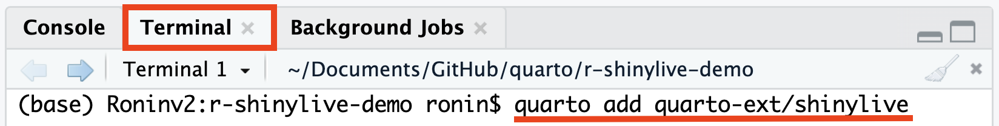

R-shinylive app in Quarto!
Interested in deploying a Shiny application for R within Quarto? Check out:
https://github.com/coatless-quarto/r-shinylive-demo
For the demo, we’re showing the source code used in Joe Cheng’s posit::conf(2023) demo (Warning: Large file size, don’t open on mobile! (Source Code)
Sample Application
#| standalone: true
#| viewerHeight: 600
library(shiny)
library(bslib)
# Define UI for app that draws a histogram ----
ui <- page_sidebar(
sidebar = sidebar(open = "open",
numericInput("n", "Sample count", 100),
checkboxInput("pause", "Pause", FALSE),
),
plotOutput("plot", width=1100)
)
server <- function(input, output, session) {
data <- reactive({
input$resample
if (!isTRUE(input$pause)) {
invalidateLater(1000)
}
rnorm(input$n)
})
output$plot <- renderPlot({
hist(data(),
breaks = 40,
xlim = c(-2, 2),
ylim = c(0, 1),
lty = "blank",
xlab = "value",
freq = FALSE,
main = ""
)
x <- seq(from = -2, to = 2, length.out = 500)
y <- dnorm(x)
lines(x, y, lwd=1.5)
lwd <- 5
abline(v=0, col="red", lwd=lwd, lty=2)
abline(v=mean(data()), col="blue", lwd=lwd, lty=1)
legend(legend = c("Normal", "Mean", "Sample mean"),
col = c("black", "red", "blue"),
lty = c(1, 2, 1),
lwd = c(1, lwd, lwd),
x = 1,
y = 0.9
)
}, res=140)
}
# Create Shiny app ----
shinyApp(ui = ui, server = server)Tutorial: Using r-shinylive for Static Shiny Apps in Quarto Documents
Are you interested in creating your own Quarto document with embedded static Shiny apps? This tutorial will guide you through the process of using the r-shinylive R package to achieve just that. Let’s get started!
Installation
Step 1: Install the r-shinylive R package. It’s currently hosted on GitHub and can be obtained from the R console using the following command:
# Install the 'pak' package manager if you haven't already
install.packages("pak")
# Install 'r-shinylive' using 'pak'
pak::pak("posit-dev/r-shinylive")Setting Up Your Quarto Project
Step 2: Create a new Quarto project. Open your terminal and execute the following command:
quarto create project default
During project creation, you’ll be prompted to provide a directory name. This name will also serve as the Quarto document filename. Please note that if you skip this step, a _quarto.yml file won’t be generated, resulting in an error when you attempt to render the document.
ERROR: The shinylive extension must be used in a Quarto project directory (with a _quarto.yml file).Installing the Quarto Extension for r-shinylive
Step 3: Install the Quarto extension for shinylive. In the Terminal tab, run the following command:
quarto add quarto-ext/shinylive
Including the Shiny App in Your Quarto Document
Step 4: To include a Shiny app directly in your Quarto file (.qmd), you need to add a filter key for shinylive at the top of the desired Quarto file. Open your Quarto file and add the following YAML header:
filters:
- shinyliveStep 5: Place your Shiny application code within your Quarto file (.qmd) as follows:
---
title: "Our first r-shinylive Quarto document!"
filters:
- shinylive
---
```{shinylive-r}
#| standalone: true
ui <- ...
server <- function(input, output, session) {
...
}
shinyApp(ui, server)Rendering Your Quarto Document
Step 6: Once you are satisfied with your Shiny app and content, render the document by pressing the Render button in RStudio.

Or type in the Terminal tab:
quarto preview R-shinylive-demo.qmd --no-browser --no-watch-inputsFolder Structure
During the render process, the output directory should contain the following structure:
.
├── _extensions
│ └── quarto-ext/shinylive # Added by 'quarto add'
├── _quarto.yml # Created by 'quarto create'
├── R-shinylive-demo.html # Rendered Document
├── R-shinylive-demo.qmd # Quarto Document with Shiny App
├── R-shinylive-demo_files # Supporting files
└── shinylive-sw.js # Service WorkerPublishing Your Quarto Document
Step 7: Once you are satisfied with your shinylive app and Quarto document, it’s time to publish your work. There are multiple options for publishing with Quarto, and we’ll present two of them. Choose the option that best suits your needs for sharing and distributing your Quarto document with your embedded shinylive app.
Option 1: Publish to GitHub Pages
To make your Quarto document accessible on GitHub Pages via Quarto, use the following command in your terminal:
quarto publish gh-pagesThis option is great if you want to share your document through a GitHub Pages website.
Option 2: Publish to Quarto Pub
Alternatively, you can publish your Quarto document on Quarto Pub via Quarto. Use the following command in your terminal:
quarto publish quarto-pubThis option provides you with a shareable link for easy access by others and is a good choice if you prefer a dedicated platform for your documents.
A Quick Fix for Service Worker Inclusion
If you’ve encountered issues with the quarto publish command not including the required service worker JavaScript file, you can quickly resolve this by adding the following lines under the html key in your document header:
format:
html:
resources:
- shinylive-sw.jsThis addition ensures that the necessary service worker JavaScript file (shinylive-sw.js) is included when you publish your Quarto document. The Quarto team is aware of the issue regarding service workers not being uploaded automatically from extensions.
If you encounter this issue, you may see an error message in your browser’s JavaScript console that looks like:
Uncaught Error: ServiceWorker controller was not found!
The above error occurred in the <Viewer> component:By implementing this quick fix, you can prevent this error and ensure the proper functioning of your shinylive app within your Quarto document.
Advanced (Optional Step): Continuous Publishing Using GitHub Actions
For advanced users, you can set up continuous integration (CI) to automatically update your application whenever changes are committed to the Quarto document. This process involves creating a workflow for GitHub Actions and utilizing actions from r-lib/actions (for R installation) and quarto-dev/quarto-actions (for Quarto setup and publishing).
Follow these steps to configure continuous publishing:
Step 1: Create a .github/ folder in your repository if it doesn’t already exist. Place the workflows/ folder inside it. Then, create a workflow configuration file called publish-website.yml with the following content:
on:
push:
branches: [main, master]
release:
types: [published]
workflow_dispatch:
name: demo-website
jobs:
demo-website:
runs-on: ubuntu-latest
concurrency:
group: pkgdown-${{ github.event_name != 'pull_request' || github.run_id }}
permissions:
contents: write
steps:
- name: "Check out repository"
uses: actions/checkout@v4
- name: "Setup R"
uses: r-lib/actions/setup-r@v2
- name: "Setup R dependencies for Quarto's knitr engine"
uses: r-lib/actions/setup-r-dependencies@v2
with:
packages:
git::https://github.com/posit-dev/r-shinylive.git
any::knitr
any::rmarkdown
any::downlit
any::xml2
- name: "Set up Quarto"
uses: quarto-dev/quarto-actions/setup@v2
- name: "Render and Publish"
uses: quarto-dev/quarto-actions/publish@v2
with:
target: gh-pages
env:
GITHUB_TOKEN: ${{ secrets.GITHUB_TOKEN }}Step 2: Before deploying the action, use the quarto publish gh-pages command to set up the necessary gh-pages branch and repository GitHub Pages settings. This ensures that GitHub Actions can publish your Quarto document correctly.
By implementing this advanced setup, your Quarto document with the embedded shinylive app will automatically update whenever changes are pushed to the specified branches or when a release is published. This ensures that your audience always has access to the latest version of your interactive document.
References
- Shinylive R Package
- Shinylive Quarto Extension: Static Shiny apps as Quarto code chunks
Now you have successfully integrated static Shiny apps into your Quarto documents using the r-shinylive package. Happy Quarto + r-shinyliving!